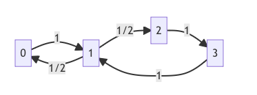

- 지난시간 복습
| 특징1(수렴) | 특징2(동일row) | 특징3(정상분포) | 특징4(정상과정) | |
|---|---|---|---|---|
| 예시1(나이스) | O | O | 존재O, 유일O | O |
| 예시2(나이스) | O | O | 존재O, 유일O | O |
| 예시3(흡수) | O | O | 존재O, 유일O | O |
| 예시4(단위행렬) | O | X | 존재O, 유일X | O |
| 예시5(주기) | X | X | 존재O, 유일O | O |
- 목표: 예시4와 예시5를 좀 더 공부해보자.
irreducible
Motivation Examples
예제1
- 아래의 전이확률을 고려하자.
P =np.array([0.5, 0.5, 0.0, 0.0,
0.5, 0.5, 0.0, 0.0,
0.0, 0.0, 0.5, 0.5,
0.0, 0.0, 0.5, 0.5]).reshape(4,4)
Parray([[0.5, 0.5, 0. , 0. ],
[0.5, 0.5, 0. , 0. ],
[0. , 0. , 0.5, 0.5],
[0. , 0. , 0.5, 0.5]])- 특징1: \({\bf P}\)는 수렴함
- 특징2: 모든 row가 같은건 아님
- 특징3: 정상분포는 유일하게 존재하지 않음
- 특징4: 임의의 초기분포에 대하여, \(\{X_t\}\)의 뒷부분은 동일한 분포를 가짐.
- 특징5: 상태공간 \(E\) 에 equivalence class 가 2개 있는 느낌
예제2
- 아래의 전이확률을 고려하자.
P =np.array([1/4, 1/4, 0.0, 1/2,
1/4, 1/4, 0.0, 1/2,
0.0, 0.0, 1.0, 0.0,
1/2, 1/4, 0.0, 1/4]).reshape(4,4)
Parray([[0.25, 0.25, 0. , 0.5 ],
[0.25, 0.25, 0. , 0.5 ],
[0. , 0. , 1. , 0. ],
[0.5 , 0.25, 0. , 0.25]])- 특징1: \({\bf P}\)는 수렴함
- 특징2: 모든 row가 같지는 않음
- 특징3: 유일한 정상분포를 가지는건 아님
- 특징4: 임의의 초기분포에 대하여, \(\{X_t\}\)의 뒷부분은 동일한 분포를 가짐.
- 특징5: 상태공간 \(E\)에 equivalence class 가 2개 있는 느낌
정의 및 이론
- 용어
- irreducible (기약) // reducible (비기약)
- (strongly) connected
- 정의
- 느낌
- 연결되어있는 느낌. 즉 모든 \(x,y \in E\)에 대하여 \(x\to \cdots \to y\) 인 path 나 \(y \to \cdots \to x\) 인 path 가 존재함
- 겉도는 그룹이 없음 (상태공간 \(E\)에 단 하나의 equivalence class가 존재함)
- Thm: HMC \(\{X_t\}\) 가 (1) finite state space 를 가지고 (2) irreducible 이라면 \(\{X_t\}\)의 유일한 정상분포 \({\boldsymbol \pi}\)가 존재하며 모든 state에 대한 확률은 양수이다.
aperiodic
Motivation Examples
예제3
- 아래와 같은 전이확률을 고려하자.
array([[0., 1., 0.],
[0., 0., 1.],
[1., 0., 0.]])- 다이어그램
flowchart LR 0 -->|1| 1 1 -->|1| 2 2 -->|1| 0
- 특징1: \({\bf P}\)는 수렴안함
- 특징2:
- 특징3: 정상분포는 유일하게 존재함.
- 특징4: 임의의 초기분포에 대하여, \(\{X_t\}\)의 뒷부분은 동일한 분포를 가짐.
- 특징5: 상태공간 \(E\)에 equivalence class 가 1개
- 특징6: 주기성을 가짐 (주기는 3)
- 관찰: 어떠한 상태 \(x \in E\) 에 있더라도 반드시 3번 안에는 원래 상태로 되돌아옴.
예제4
- 아래와 같은 전이확률을 고려하자.
P = np.array([0.0, 1.0, 0.0, 0.0,
0.0, 0.0, 0.0, 1.0,
0.0, 1.0, 0.0, 0.0,
1/3, 0.0, 2/3, 0.0]).reshape(4,4)
Parray([[0. , 1. , 0. , 0. ],
[0. , 0. , 0. , 1. ],
[0. , 1. , 0. , 0. ],
[0.33333333, 0. , 0.66666667, 0. ]])- 다이어그램
flowchart LR 0 -->|1| 1 1 -->|1| 3 2 -->|1| 1 3 -->|1/3| 0 3 -->|2/3| 2
- 특징1: \({\bf P}\)는 수렴안함
- 특징2: Pass
- 특징3: 정상분포는 유일하게 존재함.
- 특징4: 임의의 초기분포에 대하여, \(\{X_t\}\)의 뒷부분은 동일한 분포를 가짐.
- 특징5: irr
- 특징6: 주기성을 가짐 (주기는3)
flowchart LR 0 -->|1| 1 1 -->|1| 3 2 -->|1| 1 3 -->|1/3| 0 3 -->|2/3| 2
0에서 시작한다면?
- \(0 \to 1 \to 3 \to 0\)
- \(0 \to 1 \to 3 \to 2 \to 1 \to 3 \to 0\)
- \(0 \to 1 \to 3 \to 2 \to 1 \to 3 \to 2 \to \cdots\)
3번만에 되돌아오거나, 6번만에 되돌아오거나, 9번만에 되돌아오거나 … \(\Rightarrow\) 주기는 3 (3,6,9의 최대공약수는 3)
1에서 시작한다면?
- \(1 \to 3 \to 0 \to 1\)
- \(1 \to 3 \to 2 \to 1 \to 3 \to 0 \to 1\)
- \(\dots\)
2에서 시작한다면?
3에서 시작한다면?
꿀팁: HMC \(\{X_t\}\)가 irreducible 이라면 모든 \(x \in E\) 는 같은 주기를 가진다.
예제5
- 아래의 전이확률을 고려하자.
P =np.array([0.0, 1.0, 0.0, 0.0,
1/2, 0.0, 1/2, 0.0,
0.0, 0.0, 0.0, 1.0,
0.0, 1.0, 0.0, 0.0]).reshape(4,4)
Parray([[0. , 1. , 0. , 0. ],
[0.5, 0. , 0.5, 0. ],
[0. , 0. , 0. , 1. ],
[0. , 1. , 0. , 0. ]])- 다이어그램
flowchart LR 0 -->|1| 1 1 -->|1/2| 0 1 -->|1/2| 2 2 -->|1| 3 3 -->|1| 1
- 특징1,2:
- 특징3: 정상분포를 가짐
- 특징4: 임의의 초기분포에 대하여, \(\{X_t\}\)의 뒷부분은 동일한 분포를 가짐.
- 특징5: irr
- 특징6: 주기가 없음
flowchart LR 0 -->|1| 1 1 -->|1/2| 0 1 -->|1/2| 2 2 -->|1| 3 3 -->|1| 1

1에서 시작한다면?
- \(1 \to 0 \to 1\), 2번만에 리턴
- \(1 \to 2 \to 3 \to 1\), 3번만에 리턴
이 경우 2와 3의 최대공약수는 1이므로 주기는 1이다.
주기가 1인 경우는 aperiodic 하다고 표현한다. (언제 올지 몰라)
꿀팁: 자기자신으로 되돌아올 확률이 있다면 항상 aperiodic 하다.
정의 및 이론
- 정의
- 느낌
- 이론: \(\{X_t\}\)가 finte state HMC 이면, 모든 상태가 항상 같은 주기를 가진다.
에르고딕 마코프체인
정의 및 이론
- Thm: HMC \(\{X_t\}\)가 (1) finite state space를 가지고 (2) irreduciable 하고 (3) aperiodic 이라면, \({\bf P}\)가 수렴하고 수렴한 matrix의 모든 row는 같다. 따라서 임의의 초기분포 \({\boldsymbol \mu}\) 에 대하여
\[\lim_{t\to \infty}{\boldsymbol \mu}^\top{\bf P}^t = {\boldsymbol \pi}^\top \]
이 성립한다. 여기에서 \({\boldsymbol \pi}\)는 \(\{X_t\}\)의 정상분포이다.
- 정의: 아래의 식을 만족하는 HMC \(\{X_t\}\)을 에르고딕하다고 말한다.
\[\lim_{t\to \infty}{\boldsymbol \mu}^\top{\bf P}^t = {\boldsymbol \pi}^\top \]